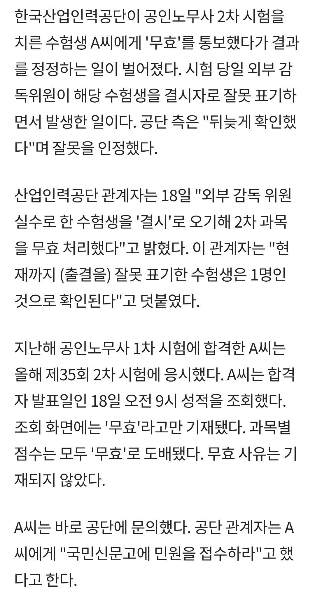
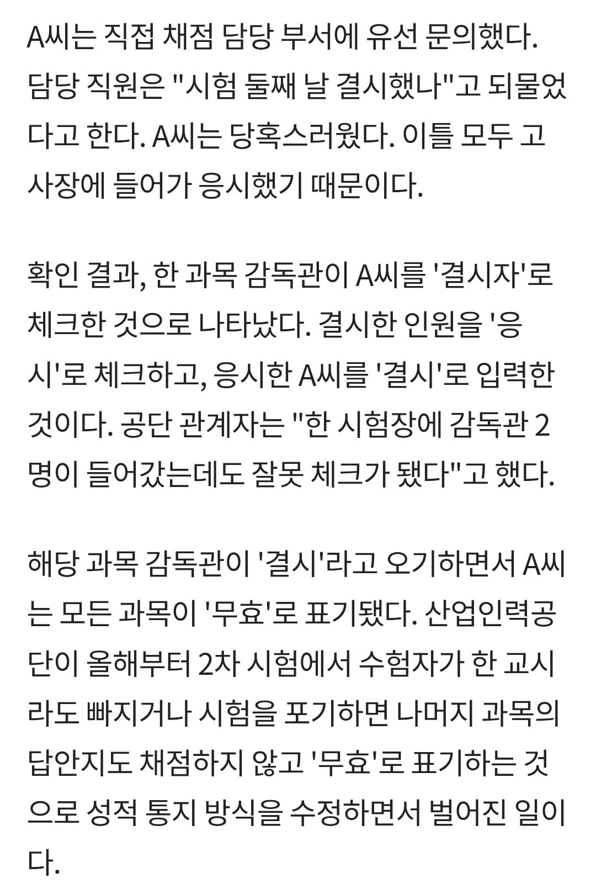
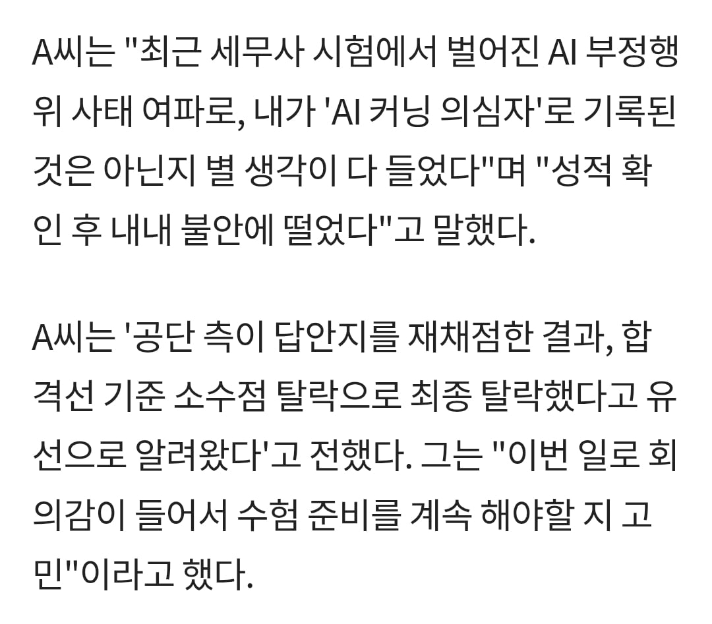

멀쩡히 시험 친 응시생 답안지 결시처리함
당사자가 합격자 발표일에 유선전화하니 서둘러 4시간만에 점수 내놓음
다들 ai부정행위로 난리일 때 순수체급으로 대형사고 또 침
(아까 올린 글이 읽기 불편할 듯 해서 기사 캡쳐본 넣어서 재업)



멀쩡히 시험 친 응시생 답안지 결시처리함
당사자가 합격자 발표일에 유선전화하니 서둘러 4시간만에 점수 내놓음
다들 ai부정행위로 난리일 때 순수체급으로 대형사고 또 침
(아까 올린 글이 읽기 불편할 듯 해서 기사 캡쳐본 넣어서 재업)
ㄹㅇ 산업인력공단 이새끼들은 큐넷부터 존나 맘에 안들어
뻐킹 어메이징 코리안 ㅋㅋㅋㅋ
산인공 문제출제부터 채점까지 문제가 많음
소수점 차로 탈락 ㄷㄷㄷ ㅠㅠ
진짜 탈락인거 맞나도 계속 의심될듯
이제는 시험 자체가 의미가 있나 싶음. 이제는 기능사가 기사보다 더 유용할듯?
왜요? 기사가 상위 아닌가요? 이해를 못해갖구 설명 점..
기사는 이론적인 부분 위주로 하는데, 기능사는 실제 실무에서 작업해야하니까. 예를들면.. 배관 기능사가 배관 조립 제작을 현장에서 실제로 해야하는걸 로봇이 아직까지는 대체하기 힘들것같아서?
정부에서 의도한거지 뭐 ㅇㅇ 일부 찐빠 감내하고 똥받이 탱커 하나 만들겸 공공기관으로 분리한거임
얘네는 상위기관이 고노부인거부터가 문제임
자격검정평가가 중요해졌는데 고노부 아래서에서 뭘하겠음
행정부 아래로 가던지
그 업무만 따로 분리해서 나오던지
고모부는 아는데 고노부는 뭐임?
고용노동부
소수점 차이로 떨어지다니 너무 아깝다 ㅠㅠㅠㅠㅠㅠㅠㅠ
재채점한게 영향은 없었으려나.
이야....
산인공은 잡도리가 ㄹㅇ 시급함
뭐.. 시험 자체의 시행횟수가 워낙 많으니까.. 오히려 그 많은 시험 하는데 이 정도 찐빠밖에 안 난다는게 신기하긴 함
채점대상제외자도 채점위원은 그사람인지 모르니까 채점은 다 되어있음..
근데 산안공이 관리하는 시험이 너무 많고 방대하고 전문인력은 극소수고 알바 갈아넣어서 돌아가는 거라 펑크 안 나기가 쉽지 않음
산인공 이새끼들 했던짓 보면 좀 쳐맞아야됨 ㅋㅋㅋ